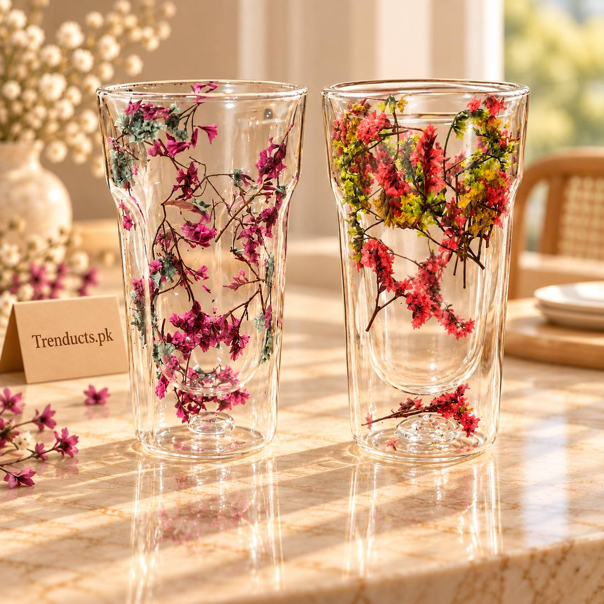
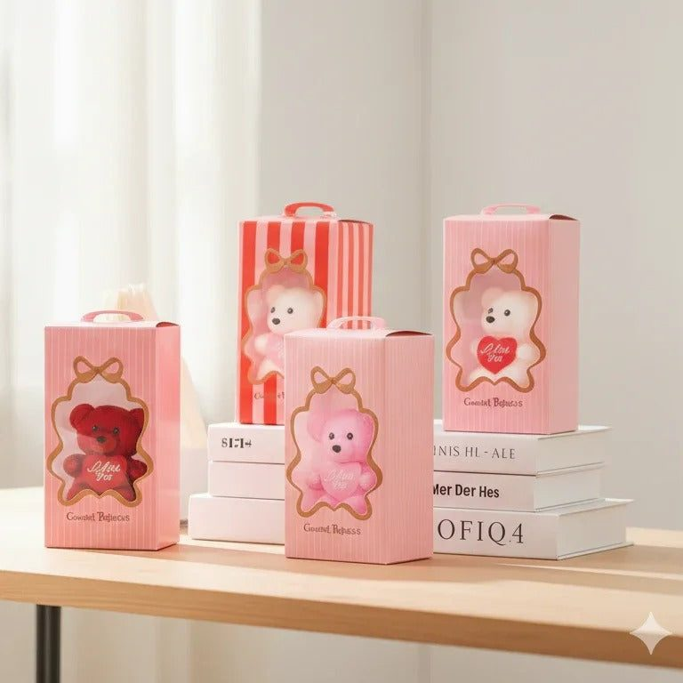

Thoughtful gift ideas under Rs. 3,000 for Pakistani occasions: Eid, birthdays, housewarmings, colleagues and children, with tips on choosing and wrapping.
In Pakistan, gifts are part of almost every occasion: Eid, birthdays, weddings, a new baby, a new house, a promotion or simply visiting relatives after a long time. Very often the budget is modest, and the challenge is to find something that feels thoughtful rather than generic. A good gift does not have to be expensive. It needs to be useful, a little special, and chosen with the person in mind. This guide focuses on ideas that commonly fall under Rs. 3,000. Prices change, so always check the current price before ordering.


Before you browse, think for a minute about who the gift is for. What do they do every day? Do they love chai, cook a lot, work at a desk, travel often or have young children? A gift linked to a real habit is remembered much longer than a random showpiece. If you are not sure, practical home items are a safe choice because almost every household can use them.
On Eid, elders traditionally give Eidi, usually money, to children. For adults and families, small gifts are common when visiting. Good choices include:
For example, the double-wall floral glass tumbler shown on this page was listed at Rs. 1,250 on Trenducts when we checked in October 2026.
For friends and siblings, think about their hobbies. A desk accessory for someone who works or studies, a mug for a tea lover, a makeup organizer for someone with a growing collection or a small humidifier with a night light for a bedroom. A desk globe on a ring stand, listed at Rs. 2,250 when we checked, makes a nice gift for a student or a colleague who likes travel.
When someone moves into a new house or flat, practical gifts are appreciated. Ideas include:
A housewarming gift that helps the family settle in tends to be used every day.
Children love gifts that they can play with immediately. Drawing tablets, simple board games, puzzles, colourful storage boxes and soft toys are all good choices. For very young children, check the age recommendation and avoid small parts. A small teddy and flower gift box, listed at Rs. 650 when we checked, is a sweet option for little ones or as an add-on to a larger gift.
For colleagues, keep gifts neutral and useful: a desk organizer, a mug, a plant or a pen holder. For teachers at the end of the school year, a handwritten card from the child with a small practical gift is often valued more than anything expensive.
A new baby brings many gifts of clothes, often in sizes the baby outgrows in weeks. Consider something practical instead, such as a bottle cleaning kit, a diaper bag or a set of baby-safe feeding items. Ask the parents first if you are unsure what they already have.
If one item feels too small, combine two or three related pieces in a basket or box. A mug with a packet of good chai and a few biscuits, a small planter with seeds, or a set of glasses with a bottle of sharbat all feel generous without going over budget. A themed bundle also shows that you put thought into the gift.
Presentation makes a modest gift feel special. Use simple wrapping paper or a reusable gift bag, add a ribbon and write a short card in your own words. A few lines in Urdu or English about why you chose the gift turn it into something personal. Remove the price tag, and keep the receipt or order details in case the person needs to exchange it.
When ordering online in Pakistan, allow enough time for delivery, especially before Eid when couriers are busy. Check the delivery charges, the return or replacement policy and whether cash on delivery is available. Order a few days early so you are not waiting on the morning of the event.
For ideas across home, kitchen, decor and toys, you can see what's trending right now and filter by price to stay within your budget. Trenducts offers a flat Rs. 199 delivery charge anywhere in Pakistan and cash on delivery.
The best gifts show that you were thinking of someone. With a clear idea of the person and a modest budget, you can find something they will actually use and remember.